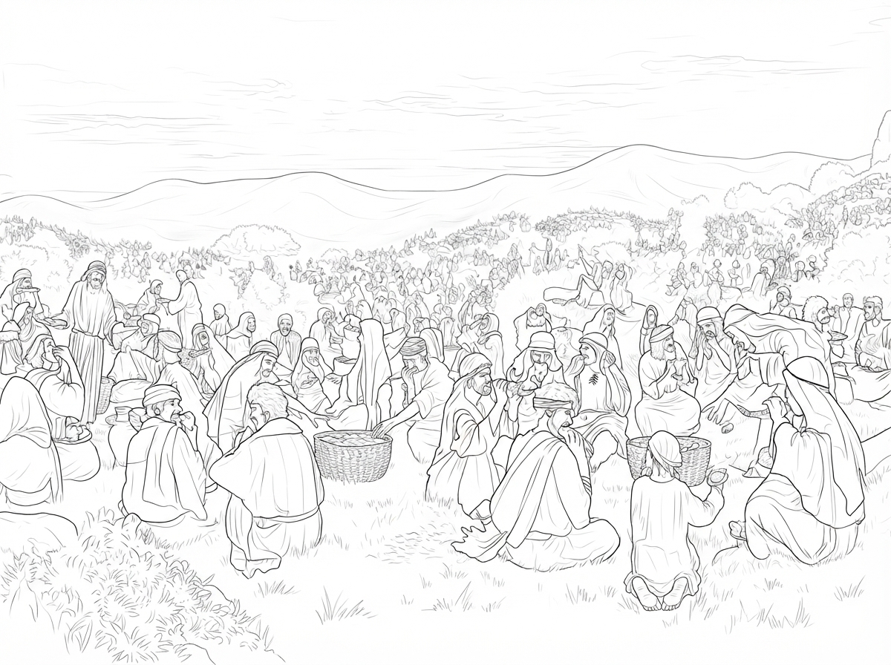

A story by Chris Kuo
The Eyes of the Eagle
See the Glory
Some stories have been told so many times. The birth of Jesus. His ministry. His healing of the sick. His miracles. His crucifixion. His resurrection from the dead. Perhaps you already know these stories almost too well. Sometimes I wonder: If I had truly stood there in those days, watching all these things unfold before my eyes, what would I have seen? A man? A teacher? A prophet who performed miracles? That question remained with me throughout the writing of this story.
From the Preface
by Chris Kuo
Some stories have been told so many times. The birth of Jesus. His ministry. His healing of the sick. His miracles. His crucifixion. His resurrection from the dead. Perhaps you already know these stories almost too well. Sometimes I wonder: If I had truly stood there in those days, watching all these things unfold before my eyes, what would I have seen? A man? A teacher? A prophet who performed miracles? That question remained with me throughout the writing of this story.
Contents
12 chapters
-
01
Spiritual Vision
Among the cliffs and coves where we lived, there were many gulls and all manner of seabirds.

-
02
He Called My Name
Ever since the golden eagle had taught me how to see, I had grown even more eager to look upon the world through the…

-
03
The Story of Centurion
At the edge of the forest was the same valley I had seen the day before. I circled above it and recognized the familiar…

-
04
A Little Boy's Lunch Bag
People loved listening to my Master tell stories. They always wanted Him to say more. But happy moments always seem to pass the fastest.…

-
05
The Wind and the Sea Were Still
My Master and His disciples got into a boat to travel to another village. That day, the wind and the waves had a little…

-
06
Strange Humans
Of all the creatures I had seen in the sky, upon the earth, and in the sea, none seemed more intelligent than human beings.

-
07
My Master Was Crucified
The night wind was quiet.

-
08
He Rose from the Dead
Before sunset, they took my Master’s body down from the cross.

-
09
Centurion’ Change
Centurion began to look back over his life.

-
10
Stephen Is Stoned to Death
That day, I flew across the familiar sky and along the cliffs above the sea. I missed my teacher. I missed my Golden Eagle…

-
11
Walk With Him Two Miles
Centurion had served in the Roman army for twenty years. According to military custom, he could have served for several more years before retiring.…

-
12
The Throne in Heaven
Shrubs growing from the cracks in the cliffs clothed the mountainside in everlasting green. The setting sun painted the sheer rock faces with shades…